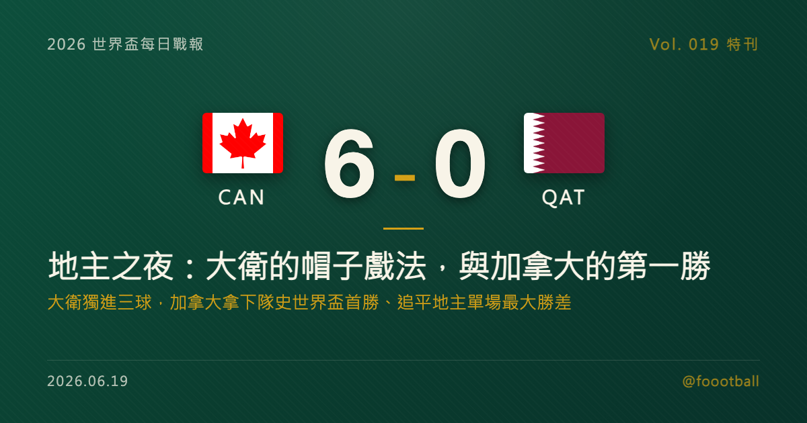

地主之夜：大衛的帽子戲法，與加拿大的第一勝
2026 世界盃 B 組次輪，地主加拿大在溫哥華 6-0 大勝卡達，拿下隊史在世界盃決賽圈的第一場勝利。前鋒喬納森·大衛（Jonathan David）在第 29、45+、92 分鐘獨進三球，成為史上第一位在世界盃單場完成帽子戲法的加拿大男足球員；這場 6 球大勝也追平了地主球隊在世界盃單場最大勝差的紀錄。這篇特刊，把三顆球、這一夜的多項紀錄，與歡慶背後的那道陰影，逐項拆開來講。

2026 世界盃特刊｜Vol. 019 番外
有些勝利，是一個國家等了四十年的。
2026 年 6 月，在溫哥華的 BC Place，地主加拿大面對卡達。九十分鐘過後，計分板是 6-0。這不只是一場大勝，而是加拿大男足在世界盃決賽圈寫下的第一場勝利——在此之前，他們參加過兩屆世界盃、踢了六場比賽，一勝難求。而把這扇門推開的，是 26 歲的前鋒喬納森·大衛（Jonathan David），他一個人就獨進三球，成為史上第一位在世界盃單場完成帽子戲法的加拿大男足球員。
這一夜值得慢慢拆——先拆大衛的三顆球，再拆那面 33 比 2 的射門數懸殊，接著拆加拿大這四十年的等待與那一整排被改寫的紀錄，最後，也得誠實地拆開歡慶背後的那道陰影。
一、三顆球的解剖：抽射、補射、收尾
大衛的帽子戲法，是一個前鋒在主場、在對的時間，把握住每一次機會的範本。
第 29 分鐘，第一球——凌空抽射。 加拿大在前場製造混亂，球來到禁區邊緣的大衛腳下，他沒有多餘的調整，直接以一記乾淨俐落的凌空抽射破門。這是一顆「終結者」式的進球：不靠盤帶，靠的是身體擺正的速度與出腳的果斷。
第 45+ 分鐘，第二球——上半場補時的補射。 在上半場補時階段，加拿大的一次攻勢製造出二次進攻的機會，皮球彈到門前，大衛第一時間把握住這次反彈破門。半場結束前的這一球，把比分擴大到讓卡達難以追趕的差距，也奠定了整場的基調。
第 92 分鐘，第三球——終場前的句點。 比賽進入尾聲，卡達此時已因兩張紅牌只剩 9 人，加拿大的進攻空間被進一步放大。大衛在補時階段再入一球，完成了個人的帽子戲法，也把比分推上 6-0。一記抽射、一記補射、一記收尾，三顆球串起來，幾乎是一份濃縮版的「禁區嗅覺」教材。
值得一提的是，這三顆球，是大衛個人的世界盃首批進球。他在 2022 年卡達世界盃隨隊出戰卻未能破門；四年後回到主場，他用一個帽子戲法補上了這一塊。
二、數據面：33 比 2 的射門懸殊
如果只看比分，6-0 是一場碾壓；而把數據攤開，這場碾壓的程度甚至超過比分本身。
| 指標 | 🇨🇦 加拿大 | 🇶🇦 卡達 |
|---|---|---|
| 進球 | 6 | 0 |
| 射門次數 | 33 | 2 |
| 紅牌 | 0 | 2 |
| 終場人數 | 11 | 9 |
幾個重點：
- 射門 33 比 2，差距 31 次。 根據賽事統計（台媒 TSNA、NOWnews 引述），這 31 次的射門數落差，追平了世界盃史上單場射門次數差距最大的紀錄。一支球隊整場只放對手射門兩次，本身就是一種壓制。
- 6 球只用了 33 次射門，效率談不上奢侈，但足夠致命。 加拿大沒有靠運氣，他們持續地把球送進對方禁區、製造二次進攻——大衛的第一、第二球，都來自這種「壓上去、再補一刀」的反覆衝擊。
- 下半場的紅牌，放大了原本就存在的差距。 必須誠實地說：卡達在下半場連吞兩紅、以 9 人應戰，這讓加拿大後段的進攻空間明顯變大，第 75 分鐘的烏龍球與大衛第 92 分鐘的第三球，都發生在卡達少打兩人之後。6-0 的壓制是真實的，但它的後半段，是在對手不完整的情況下完成的。
三、四十年的白卷：加拿大的世界盃前史
大衛這三球的份量，要放回加拿大的世界盃歷史裡，才看得清楚。
加拿大男足此前只參加過兩屆世界盃。1986 年墨西哥世界盃是他們的首航，小組賽三戰全敗、一球未進就打道回府。接下來是漫長的三十六年缺席，直到 2022 年卡達世界盃才再度叩關——然而那一屆，他們雖然踢出了不少令人眼睛一亮的場面，最終仍是三戰全敗、小組出局，世界盃決賽圈的勝利欄，始終是一張白卷。
換句話說，在踏進這場對卡達的比賽之前，加拿大在世界盃的全部歷史是：兩屆、六場、零勝。也正因如此，這場 6-0 不只是「贏了一場球」——它是一個國家在世界盃舞台上，等了整整四十年才拿到的第一勝。而且這一次，他們是以地主的身分，在自己的球迷面前完成的。對加拿大足球來說，這是一個能寫進教科書的夜晚。
四、那一整排被改寫的紀錄
加拿大這一夜，不只是「贏了第一場」。當晚被一起改寫或追平的，還有一串：
- 史上第一位在世界盃完成帽子戲法的加拿大男足球員。 大衛是加拿大男足史上第一位在世界盃單場獨進三球的人。
- 追平地主球隊在世界盃單場最大勝差的紀錄。 6 球的勝差，與 1934 年的義大利、1950 年的巴西、1978 年的阿根廷並列——這三隊都是各自那屆世界盃的地主，且最終都拿下了冠軍。加拿大未必要拿這份「歷史巧合」當預言，但躋身這份名單本身，已是分量十足。
- CONCACAF 球隊在世界盃史上的最大勝。 根據 ESPN 等媒體統計，這 6-0 也是中北美洲及加勒比海地區（CONCACAF）球隊在男足世界盃史上的最大勝差。
- 自 1966 年以來首位地主戴帽者。 根據賽事數據統計，大衛是自 1966 年英格蘭世界盃以來、第一位代表地主國家在世界盃單場完成帽子戲法的球員，躋身一份橫跨數十年、成員寥寥可數的名單。
這些紀錄各自獨立，卻在同一個晚上一起出現。對一支此前在世界盃顆粒無收的球隊來說，這樣的「成排」紀錄，更顯得不可思議。
五、喬納森·大衛：從里爾走向歐洲頂級舞台，加拿大史上頭號射手
把鏡頭拉近到大衛本人，會發現這個帽子戲法並不是偶然。
現年 26 歲的大衛，是加拿大近年最穩定的得分點。他在歐洲成名於法甲的里爾（Lille），以高效的禁區嗅覺與不顯眼卻致命的跑位著稱；這些特質，也正是他在加拿大國家隊持續成為得分核心的原因。事實上，他早已是加拿大隊史的頭號射手——2024 年 11 月，他超越了前輩拉林（Cyle Larin，本場也有進球），成為加拿大男足歷史進球紀錄保持者，並持續把這個數字往上推。
對大衛來說，唯一缺的那塊，就是世界盃進球。2022 年在卡達，他隨隊出戰卻沒能破門；這個遺憾，他用一場主場的帽子戲法一次補齊。一個球員在自己國家舉辦的世界盃、在隊史第一場勝利裡獨進三球——這樣的劇本，連編劇都未必敢這樣寫。
六、歡慶之外：科內的傷，與卡達的逆境
不過，這個夜晚並不全是煙火。
加拿大中場科內（Ismaël Koné）在下半場遭遇對手一次嚴重犯規，腿部受傷、被擔架抬離場——那次犯規也讓卡達吃到了當晚的第二張紅牌。一支球隊歷史性的第一勝，與一名主力可能不短的傷停，在同一個晚上發生，是足球時常出現的、五味雜陳的並置。在為加拿大慶祝的同時，這份對科內的擔憂，也該被誠實地記下來。
至於卡達，這一夜無疑是艱難的。下半場連吞兩紅、以 9 人苦撐，6-0 的比分對任何球隊都不好受。但把視角拉長一點：他們在首戰才剛在補時逼平瑞士、拿下隊史在世界盃的第一個積分，那同樣是一個值得記住的突破。一場大敗不會抹去那個夜晚，而小組賽也還剩最後一輪——對卡達來說，故事尚未寫完。
七、出線在望，但 B 組頭名未定
對加拿大而言，這場 6-0 帶來的不只是士氣，還有實打實的出線身位。
兩戰一勝一和、積 4 分、淨勝球高達 +6，加拿大暫居 B 組榜首，晉級之路已經非常樂觀。但 B 組的頭名之爭還沒結束——同樣 4 分的瑞士，將在最後一輪與加拿大正面對決，這場「4 分對 4 分」的溫哥華之戰，會直接決定誰是小組第一、誰落到次席，甚至牽動最佳第三名的比較。
但那是下一輪的事了。在這一晚，加拿大足球只需要記住一件事：四十年的等待之後，他們終於在世界盃贏了第一場，而且贏得如此盡興。當大衛的第三球落網、BC Place 的看台一起站起來的那一刻，比分牌上的 6-0，記錄的不只是一場比賽——而是一個國家，在世界盃舞台上真正抵達的、屬於自己的第一個夜晚。
本文為 2026 世界盃每日戰報的延伸特刊。賽果、數據與紀錄經多家媒體（ESPN、Sky Sports、CBC、The Globe and Mail、NBC、Yahoo Sports、World Soccer Talk、Opta Analyst，以及台灣聯合報、民視、NOWnews、TSNA 等）交叉核對。「射門數差距」「地主最大勝差」「自 1966 年以來首位地主戴帽者」等紀錄依各統計平台與媒體公開資料，平台間口徑可能略有出入。